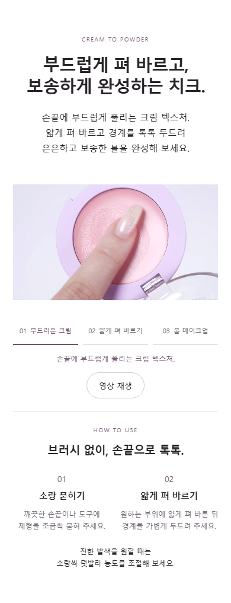
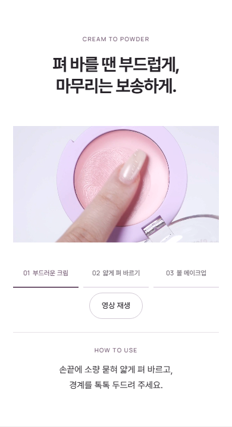

2026.10.19 · 모바일 문안 정리
설명은 짧게,
제형은 영상으로.
반복 설명을 덜어내고 핵심 소구와 사용법만 남겼습니다. 390px 기준 제형 구간의 문자는 60%, 세로 길이는 약 30% 줄었습니다.


발색·오일 구간의 도입 문장도 한 문장으로 정리했습니다. 실제 발색 사진과 카드 구성, 영상, 글자 크기, 제품 정보는 유지했습니다.
문자 수는 제형 구간에 표시되는 공백 제외 텍스트 기준 230→92자입니다. 320·390·600·860·1440px 화면과 영상 장면 선택·재생·정지를 확인했습니다.